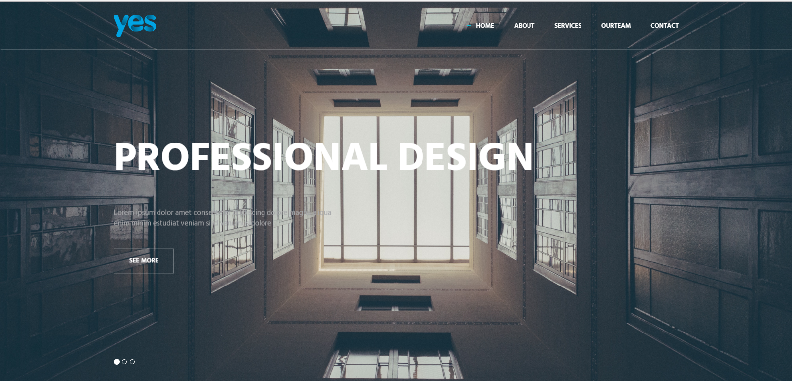
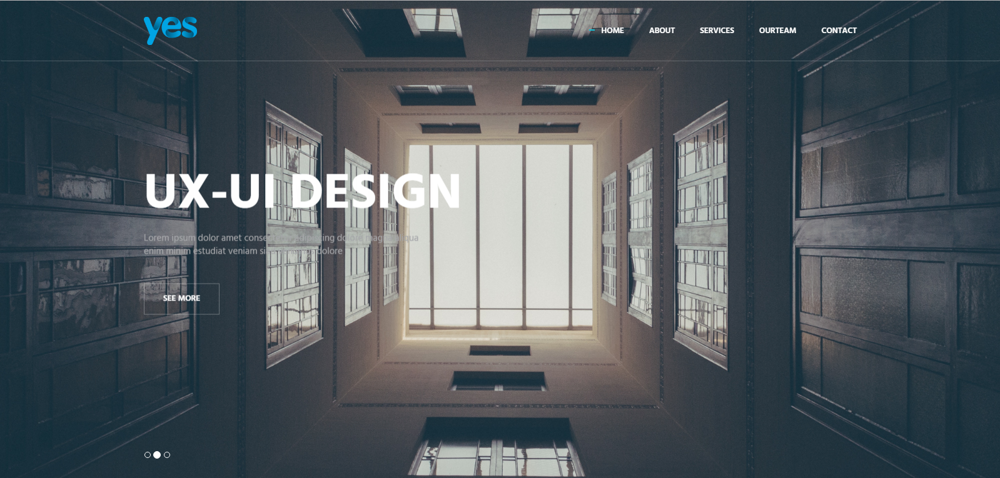
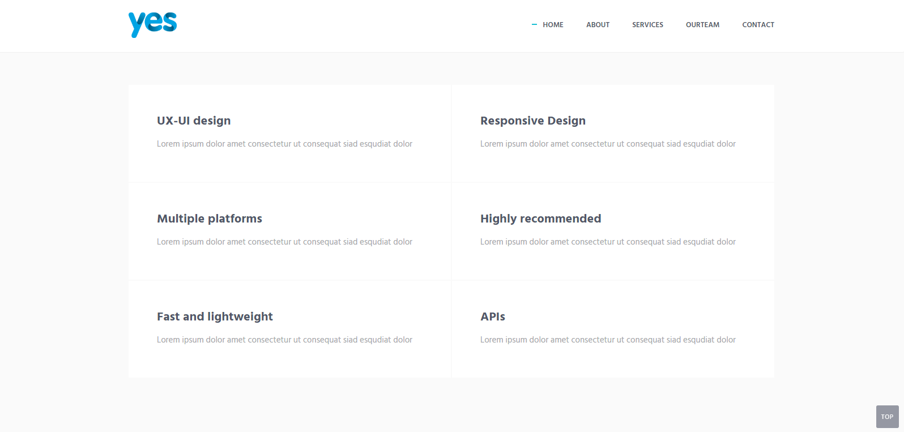
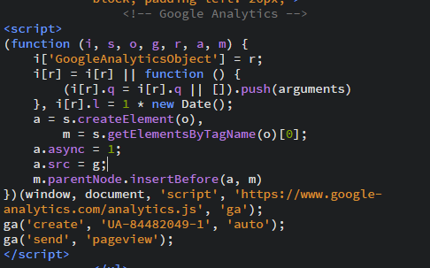

Introduction to project
UX-UI company website

Design principle applied:
- Contrast
- Repetition
- Alignment
- Proximity
- Color: Black - White - Grey
- Emotional trigger
Contrast
- The most important visual attraction of a design
- Object that are distinguishable from the rest of the object

Proximity
- Elements that relate to each other should be set close together
- Help organise your content and reduce a cluttered appearance

Navigation
- Navigation buttons and bars are easy to use and understand
- Navigation is consistent throughout the website
Color
- Black and white and grey
- Color make the website more professional
Visual heriarchy
- Page scanning patterns: F pattern
- Go big=> enhance visibility
- Space and texture
Technologies used:
- Angular1
- JQuery - JQuery UI - JQuery plugins
- Bootstrap
-
Heroku Deploy app : cloud hosting service for nodejs
- Gulp - task runner automation
- Nodemon - task watching automation for Nodejs
- NodeJS - Express JS : create local Node server and routing URL
- SASS - CSS Libraries
- JSON - Flickr API
- Google map API
JQuery plugin
- owl-carousel
- wow
- parallax
-
isotope
- jquery-corner
- smoothscroll
- preloader
- mixitup
- masonry
- flex slider
- nice scroll
CSS and icon and images
- font awesome
- ionicon
- unsplash.com
-
pixabay
- responsive design css
- Google fonts
- simple line icon
- swiper
Google analytics code

Thank you.
Any question?
The end
Developer: Hien Nguyen